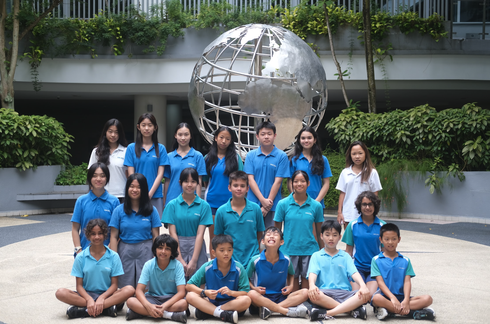
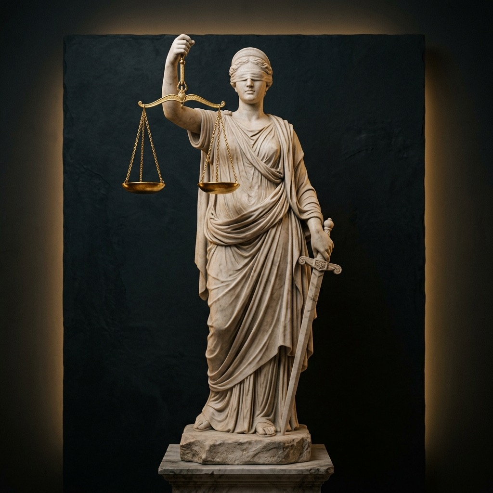

Our competitive delegation photographed on campus. Join a dedicated community of critical thinkers where ethical inquiry meets world-class tournament success.
*Official sign-up happens on your school's CIMS portal — this site is here to inform, guide, and connect.
2026 Competitions
Two high school teams from MPEO competed in the international Senior Ethics Olympiad; one of which achieved a bronze medal finalist award. Our team is now headed to the International Grand Finals on August 29, 2026.
Society Highlights
- No prior experience needed: No matter what your experience of philosophy or ethics is, you'll still be able to participate and learn alongside others.
- 2026 UWC Ethics Olympiad: If you join this academic year you will immediately get competition experience and possible awards.
What is the Ethics Olympiad?
A unique arena where constructive cooperation replaces combative argument.
"The Ethics Olympiad, an event characterised by competition and cooperation, enables students to engage in discussions on current, real-life ethical dilemmas."
"The activity encourages students to deliberate on moral issues together, mirroring the complex moral and political interactions of our society. Students participating in this activity will be taught in a way that prepares them for attending the competition. They will be able to understand more about philosophical theories and how ethics plays a role in the real world, while also applying them to debates to challenge each other's thinking."

Anatomy of an Olympiad Round
Unlike combative debate, an Ethics Olympiad round is structured into 4 civil, collaborative stages.
1. Presentation of Position
Team A presents their structured philosophical stance on an unannounced ethical case study, articulating conflicting values, identifying key stakeholders, and applying relevant moral frameworks.
- Articulate primary moral conflict and stakeholder interests
- Apply rigorous philosophical theories (e.g., Deontology, Utilitarianism, Virtue Ethics)
- Address counter-arguments and acknowledge moral trade-offs
"Clarity of thought and consistency of reasoning are evaluated above theatrical oratory. Avoid dogmatism; embrace intellectual nuance."
"Before joining MPEO, I thought philosophy was just abstract theory in old books. The Olympiad completely changed how I think: it taught us how to listen closely, deconstruct real crises together, and defend nuanced moral stances with clarity and empathy."
Our Accomplishments
In the 2026 competition circuit, MPEO proved its standing as a premier philosophical delegation.
2nd Place
Silver finish (Nov, 2025) against elite regional debate squads, demonstrating mastery of spontaneous moral triage, multi-framework analysis, and collaborative dialogue.
3rd Place
Out of dozens of competing high school teams, MPEO advanced to the grand podium, celebrated for analytical rigor, ethical depth, and exceptional team cohesion.
Grand Finals
Following our regional medal finish, MPEO earned an exclusive invitation to represent our school at the International Grand Finals, matching wits with champion delegations worldwide.
The Road to Grand Finals
Every champion on our roster started with zero philosophy background in Math Block 204.
Foundations & Socratic Salons
Weekly Wednesday workshops in Math Block 204. Master the 10 core frameworks, dissect real-world cases, and forge unbreakable team chemistry.
TKEthics Invitational Fall 2025
Our squad achieved 2nd Place Overall, advancing through grueling rounds with sharp deconstructions of biomedical and artificial intelligence cases.
Senior School Ethics Olympiad
Matched against top regional high schools to claim the Bronze Medalist / Finalist Award before an international panel of ethics professors.
International Grand Finals
Invited to the highest echelon of competitive ethics, our team will represent our school against global champions on the international stage.
In-School Ethics Olympiad
Organised directly by our student leadership team right here at school. Sign up early to gain immediate tournament experience, debate live dilemmas, and contend for awards soon.
2027 Senior Ethics Olympiad
Receive direct mentorship from our medalists, refine your argumentative agility, and earn your place on our 2027 international championship competition roster.
Why Join MPEO?
What makes the Model Philosophy Ethics Olympiad one of the school's most rewarding activities.
No Prior Experience Needed
Open to all students from Grade 9 to 12. We teach you moral philosophy and tournament strategies from ground zero.
November Olympiad & Awards
Compete soon after joining! Our leadership team is organising an in-school Ethics Olympiad this November so you gain early competition experience and contend for awards.
Premier Academic Profile
Develop world-class critical thinking, oral argumentation, and philosophical literacy prized by global top universities.
Supportive Community
Deliberate in an environment where questions are celebrated, friendships are built, and intellectual curiosity thrives.
Leadership Team Contact Details
Have questions or want to learn more? Reach out to any of our student leaders directly via email:
Frequently Asked Questions
Common questions from prospective members and LifeCon visitors.
Absolutely not! Our society welcomes students of all experience levels. We guide you step-by-step through every ethical framework, case analysis method, and competition strategy.
In traditional debate, the goal is to defeat an opponent by defending a rigid assigned stance. In Ethics Olympiad, teams are judged on philosophical rigor, depth of analysis, nuance, and constructive, civil collaboration.
We run internal practice scrimmages using official competition case packs. All interested members are encouraged to try out, and teams are formed based on enthusiasm, teamwork, and critical thinking.
We explore an exciting philosophical theory or real-world controversy, break into small groups to analyze a case study, and run a friendly mini-deliberation round.
Very soon! Our student leadership team is organising an internal Ethics Olympiad right here at school around November. Signing up early on CIMS ensures you get hands-on training, early tournament experience, and an opportunity to compete for awards in Term 1 before the 2027 Senior Ethics Olympiad season begins.
Yes! Our regular society meetings run on Wednesdays, and we offer flexible participation tracks for students balancing multiple activities.
No. This site's email form only adds you to our interest list for a friendly reminder. To officially join, please complete registration through your school's CIMS portal.
Meet Us. Scan In. Register on CIMS.
Everything you need to join MPEO for the upcoming season in one place.
November In-School Ethics Olympiad
Our student leadership team is organising an in-school Ethics Olympiad tournament around November! Signing up early on CIMS secures your spot, gives you early competitive scrimmage experience, and opens up the chance to earn awards soon in Term 1.
How to Officially Register (CIMS Portal)
Official club membership is completed through the school's CIMS activity portal. Search for "Model Philosophy Ethics Olympiad" under the Philosophy / Debate category to add MPEO to your schedule.
✦ First-Timers Welcome: Come visit us during any Wednesday session to sit in on a live philosophical discussion, meet the squad, and try a practice round.
Express Your Interest
Not ready to commit on CIMS yet? Leave your email and we'll follow up before our next Wednesday session. This isn't official registration — just a quick way for us to reach you.